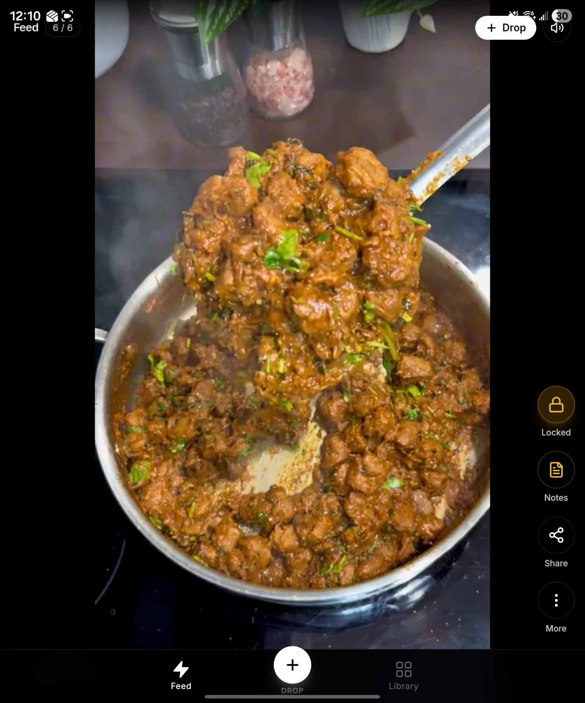
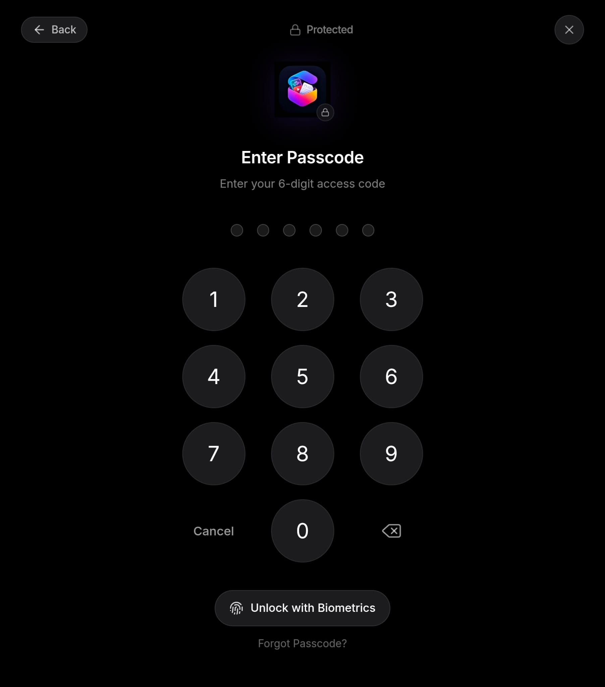

"I know I saved that somewhere."
Save anything worth keeping from the places you already scroll. Organized your way. Ready when you actually need it.
Saving is easy.
Finding it again is the part that fails.
"I know I saved that somewhere."
You open Instagram. You see an incredible recipe or workout edit. You save it. Three weeks later, you're scrolling through infinite platform bookmarks. Some things are buried. Some audio got deleted. Some posts just disappeared. The save was easy. Everything after was impossible.
Drop a link in.
Pull structured utility out.
STASH reads what the creator actually wrote — captions, descriptions, the post itself — and extracts the real, structured content. No guessing. No inventing.
When STASH doesn't know, it doesn't pretend.
Your saved stuff
should actually be useful.
STASH turns what you save into something you can act on — in the kitchen, at the gym, and everywhere in between.
A recipe you saved should become dinner.
Your phone is on the counter. Your hands are covered in flour. You don't need another story about the recipe. You need the ingredients and the next step — read out loud if you ask.
A workout you saved should become your next session.
Resting 60 seconds between sets. Trying to remember the reps. STASH structures the routine — exercises, sets, rest timer. One tap and it's running.
Your interests deserve a home.
A knockout edit on TikTok. A technique breakdown on YouTube. A rare interview clip on X. You don't have to remember which app had which clip. Everything flows into your MMA collection — organized, offline, yours.
Save the trip. Then actually take it.
A restaurant from TikTok. A museum from Instagram. A hidden hotel from a travel blog. One collection — offline, organized, ready when you land. Mixed things become one personal intention.

Everything you save.
Your way.
The user creates the structure. The algorithm does not.
Don't just save it.
Add yourself to it.
Creator content is only half the story. Your personal notes make it permanent memory.
Some things are just yours.
Your saves stay strictly personal. A 6-digit passcode and biometric authentication lock the collections you don't show when you hand someone your phone.

Your feed.
Not the algorithm's.
Social platforms are built around continuous discovery. STASH is built around the things you intentionally keep.
- — Hundreds of posts. None searchable across platforms.
- — Some buried. Some unavailable. Some forgotten.
- — No clear way to turn any of it into something useful.
- — The algorithm keeps showing you more. Not what you saved.
- Organized. Searchable. Yours.
- Cook Mode, Train Mode. Actually ready to use.
- No recommendations. No sponsored posts. No rabbit holes.
- Works offline — on the subway, in the gym, mid-flight.
A tool, not another feed.
No one deciding what matters except you.
No sponsored posts inside your STASH.
No rabbit holes pulling you back into the feed.
"You found what you wanted.
You can leave now."
When STASH doesn't know, it doesn't pretend.
If a creator's post doesn't list the details, STASH leaves the field empty — marked "Not provided." We never manufacture a value. Honesty is not a feature. It's how the product works.
Your saves stay yours.
No algorithm decides what matters.
No feed fills the space your saves left behind.
Export your vault anytime. Take it with you, always.
Keep what matters.
Your personal media library for the things you don't want to lose.
Android · Early access